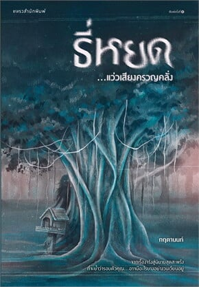

Home
Thriller
Suspense

ธี่หยด...แว่วเสียงครวญคลั่ง
ผู้เขียน:
กฤตานนท์
สำนักพิมพ์:
แพรวสำนักพิมพ์
หมวดหมู่:
นิยาย , นิยายสืบสวนสอบสวน นิยายลี้ลับ
รายละเอียด:
ไม่เคยมีที่ไหนเอากระทู้ดังจากพันทิปมาทำเป็นนิยายแบบนี้มาก่อน และเชื่อได้ว่าเป็นเรื่องจริงที่ผู้เขียนได้รับการถ่ายทอดจากคนที่ได้พบประสบการณ์นี้โดยตรง ท่ามกลางความหนาวและลมพัดหวีดหวิว แว่วเสียงครวญ “ธี่หยด...ธี่หยด...” โหยหวนชวนเขย่าขวัญ ลือกันว่าภัยร้ายกำลังจะคืบคลานเข้ามายังหมู่บ้านเล็กๆ ห่างไกลความเจริญแห่งนี้ แต่ใครเล่าจะรู้ว่ามันได้เริ่มขึ้นแล้ว...และมันไม่ใช่แค่ภัยร้ายธรรมดา ลางร้ายทั้งหลายบ่งชี้ว่า “สิ่งลี้ลับ” นั้นกำลังคุกคามครอบครัวหนึ่ง และประสบการณ์หลอนประสาทนี้คงไม่มีทางเลือนหายไปจากความทรงจำพวกเขาแน่นอน หยาด และครอบครัวอาศัยอยู่แถบชนบท บ้านของเธอทำไร่ทำสวน แต่ฐานะของพ่อเธอถือว่าดีกว่าชาวบ้านละแวกนั้นอยู่โข ช่วงหน้าหนาวน้องสาวของเธอคนหนึ่งที่ชื่อ แย้ม เกิดป่วย ประจวบเหมาะกับที่ช่วงนี้มีข่าวลือเกี่ยวกับภัยร้ายต่างๆ เกี่ยวกับสิ่งลี้ลับทั้งหลาย นั่นจึงเป็นจุดเริ่มต้นของหายนะ หยาดได้รู้ได้เห็นเหตุการณ์ต่างๆ ที่คล้ายกับเป็นลางบอกเหตุบางอย่าง แต่เพราะยังเด็กเลยไม่ได้คิดอะไรมาก จนกระทั่งแย้มล้มป่วยหนักกว่าเดิม เธอจึงเริ่มปะติดปะต่อเหตุการณ์ต่างๆ ที่ได้พบเจอมา ทั้งเพื่อนร่วมชั้นที่เสียชีวิตอย่างผิดธรรมชาติ ทั้งการได้เจอหญิงสาวแปลกหน้าตรงศาลร้างระหว่างทางเดินกลับบ้าน ทั้งการได้ยินเสียงแปลกๆ ในตอนกลางคืน และการได้เจอกับ ยายช่วย หญิงชราผู้โดดเดี่ยวที่อาศัยอยู่คนเดียวท่ามกลางป่าเขา นอกจากนี้อาการของแย้มยังดูแปลกๆ บางครั้งดูเหมือนไม่ใช่แย้มผู้อ่อนโยนคนเดิม จนกระทั่งอาการของแย้มดูท่าจะไม่ไหว จ่ามหันต์ และลุงพุฒิ ผู้ได้ชื่อว่ามีวิชาอาคมก็เข้ามาช่วย แต่สายเกินไปเสียแล้ว ในเมื่อเจ้าสิ่งลี้ลับที่อาจจะเป็น “ปอบ” ตบะแก่กล้านี้ ได้กัดกินภายในตัวแย้มและครอบงำเธอเสียสิ้น แม้พี่ชายของหยาดทั้งสามคนจะช่วยกันตัดกอไผ่หลังบ้าน อันเป็นที่ซุกซ่อน “ของ” ของปอบตนนั้น และจัดการเผาให้เหี้ยนแล้วก็ตาม
รีวิว: เป็นหนังสือที่คาดหวังมาก ๆ เพราะดัดแปลงมาจากเรื่องเล่าดังจากกระทู้พันทิป และรายการเดอะโกสต์เรดิโอ โดยตัวเรื่องยังน่ากลัวเหมือนเดิม อาจจะดรอปลงนิดหน่อยจากเรื่องเล่า แต่ทำให้มีเรื่องใหม่ ๆ ให้เราสงสัยมากขึ้น และยังมีตัวละครที่ปรับแต่งบทเพิ่มมาทำให้ไม่เบื่อด้วย สนุก หักมุม